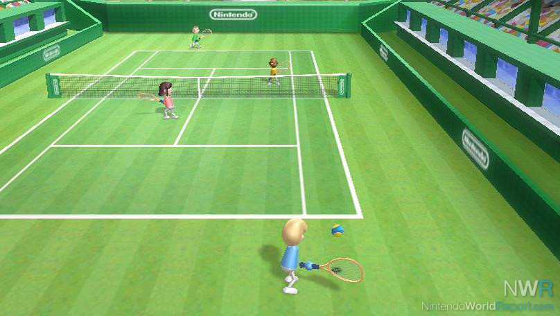

Information
What is it?
Wii Sports is, as its name says, is a sports game; to be more precise, a simulator. The game was made by Nintendo (Japan), and includes 5 sports that you can play: tennis, baseball, bowling, golf and boxing (all of them with simplified rules, to make them easier to play for new players).
Gameplay
The console controller is used to mimic the movements made in the real sport, such as swinging a tennis racket or a baseball bat. The player would win or lose skill points based on the performance in the game. The total points that you have in that sport are shown in a graphic, and once you reach 1000 points in a sport, you get the rank of “professional”.
All the sports have a multiplayer mode, with each player having their own controller (except for bowling and golf, where you could change it with the other players based on whose turn it was). 3 out of the 5 sports had 4 players as the maximum, while boxing and baseball (the 2 left) allowed only 2.
Wii allowed you to create a Mii, an avatar that you could use during the games. Apart from your own/your friend’s avatar, the characters controlled by the console were also created Miis.

Legacy
More than money
Wii Sports was the first title in the series of the Wii Games, which makes it a key factor to the success of the console. It’s also important to mention that apart from many awards such as best sports game, most innovative game, etc, Wii Sports is one of the best selling games in history, being currently ranked at number 4, attracting people of all ages.
But the finantial accomplishments aren't the only thing that the game has achieved: it had a positive impact in people, helping them to lose weight, as well as it contributed to rehabilitation and was used as therapy for stroke victims and injured soldiers in the USA